Overall robot Design
Our robot was primarily designed in Fusion 360 by taking physical measurements of different components and inputting them as parameters into the software. The two flat plates of the robot ended up being laser-cut pieces of duron. While not the strongest material, it allowed for fast prototyping and modifications if required by our design. Meanwhile, in terms of fastening components, our robot generally uses a combination of screws and nuts.
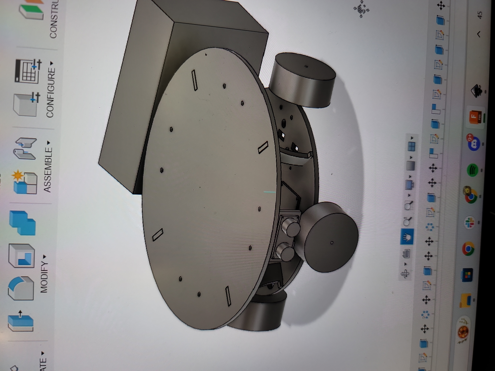
Our robot features a central, elevated Arduino Uno which is flanked by two L298 H-bridges. Towards the front of the robot there are three IR line following sensors. Meanwhile in the back there are two DC-DC buck converters that ensure that the battery voltage is regulated. The top level features the shooting mechanism, a servo w/ pom-poms as a starting/celebration indicator, a switch for turning the robot in the start zone, and an emergency start/stop switch. The two NiMH batteries were hung from the bottom plate using zip ties.For ease of testing and access, the motor wires and the buck-converters were connectorized using Molex connectors.
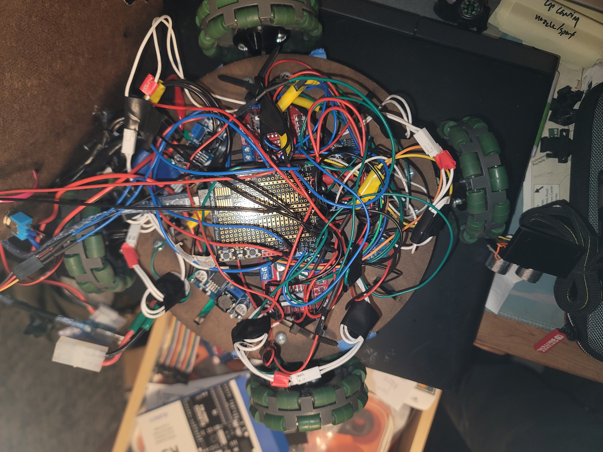
Overall software approach and abstraction
We were able to split our sketch into multiple tabs in the Arduino IDE for better organization and modularization. For example, we encapsulated the motor controls into a MotorControl C++ class in MotorControl.h and MotorControl.ccp. The class is defined below (see our github for full software implementation):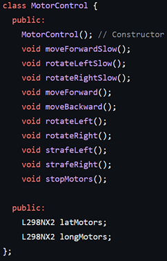
In MotorControl.cpp, we defined the motor control pins, initialized “latMotors” and “longMotors”, and defined the functions listed above. Next, we had config.h, which listed all the pins needed for our other sensors and servos. Line_Following.ino contained the entire line following state machine, which could be called from our final main code.
Initial robot orientation and start box escape
When demoing our robot, the teaching staff randomly oriented our robot within the starting box which required us to implement a system of buttons to orient the robot without turning it ourselves.
We had a plan to use an “orientation button”, which was actually a limit switch; when held down, the robot would constantly rotate in place clockwise, and the operator can let go when the robot is aligned with the line following. This worked quite well despite the need to keep our finger on a moving button. However, we would have preferred reducing the robot’s rotation speed to allow for more precise control, but we could not as the robot would begin stalling at lower speeds.
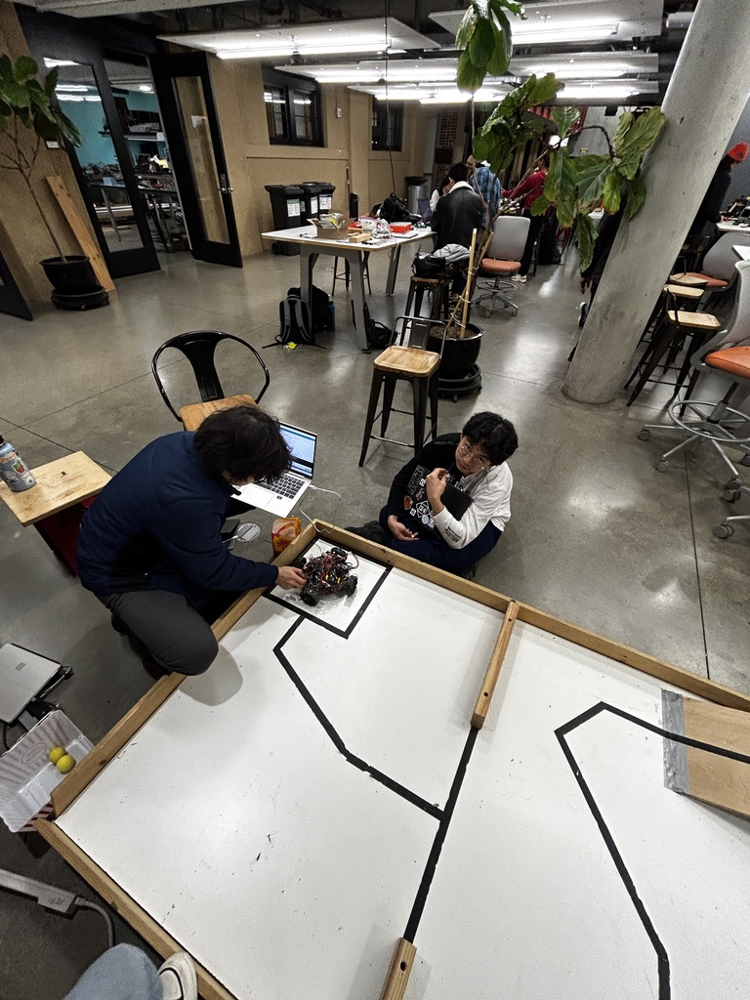
Once aligned, the robot would then call “toEdgeStartZone()” in our software, which would drive until all IR sensors detected a line. We found we then had to drive slightly forward to move the robot past the edge of the start zone, as the end of “lineFollow()” is triggered when the robot detects a line on all 3 sensors (i.e. to ensure the robot does not confuse the start box line as the T-junction line at the end of the first track). Thus lineFollow() would take the robot to the T-shaped junction, which we defined as the end of the “Exit Start Zone” section of our code.
We were relying on the “front” of the robot pointing perpendicular to the T-junction at the end of this code (pointing along the long axis of the competition board). This is because our next function call was driving straight ahead until the robot contacted the next line. Although this was somewhat reliable, it was somewhat random from what angle the robot would approach the T-junction, which could lead it to sometimes be misaligned. Given a little more time, it would have been feasible to implement additional code which adjusted the robot until all IR sensors were on the T-junction, ensuring proper alignment with the robot pointing straight forward.
Driving and Turning
Mechanical design
In our initial mechanical design we used mecanum wheels with each one placed equidistant around our circular base. Our belief was that utilizing this design allowed for rotation in place and strafing. However, we soon realized that we had confused mecanum wheels for omni wheels and that our placement of the wheels meant we had to switch to omni wheels in order to be able to drive straight as well as in the 4 cardinal directions. Another part of our design is that we had the wheels on the outside of our chassis (as opposed to being on the inner perimeter like other teams did), and to drive the wheels we used 12V motors that ended up being quite tiny.
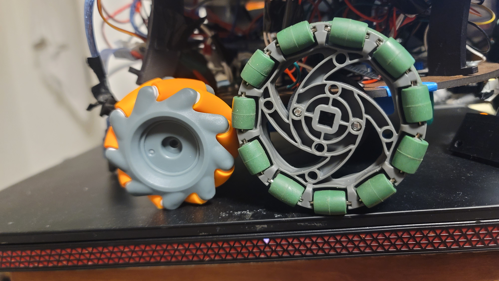
One issue that we encountered with the small motors was adapting their N20 axles to the wheels. While the original wheel set claimed that it came with the proper adapters, they were nowhere to be found, leading us to design and 3D-print custom adapters with PLA. The same had to be done once we switched to the omni wheels, since they had a different screw pattern. Originally, we had used a similar design to the injection-molded adapters that came with the mecanum wheels, but quickly realized that 3-D printed parts were much weaker in terms of shear, due to their layer lines. The adapters were quickly revised with a thicker central shaft and a fillet to further increase their strength.
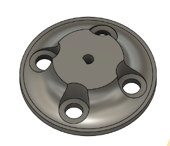
Additionally, there were some issues with the motor mount design because of a similar reason. The original mounts were very thin and fragile, with no constraints for the back of the motor and very small tolerances. This led to them very easily snapping, even just by inserting the motor. We revised this design by adding triangular “support brackets” that improved shear strength while keeping the overall dimensions the same.
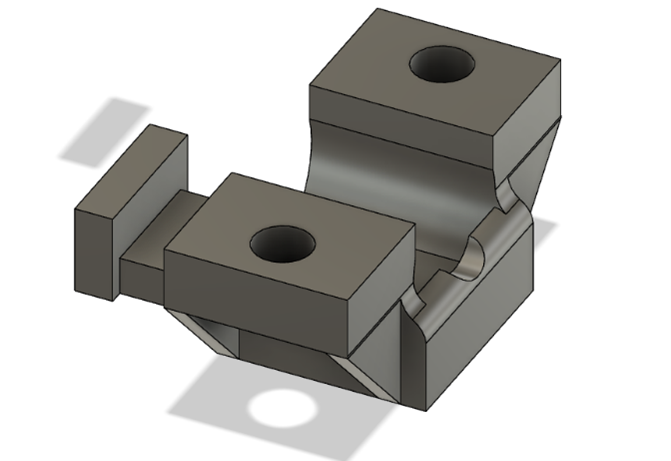
Electrical Design
In terms of the electrical design, we used 2 h-bridges to drive the motors. Due to limited pins on the arduino, the h-bridges had to share some pins. The solution we came up with was to pair up adjacent motors (rather than opposite pairs) and have those motors share their in1 and in2 inputs (which control the motor direction). While this prevented individual wheel speed control, the ability for individual direction control allowed for turning in place, which we believed was more important. Ultimately, we had two pairs of pins for input and a pair of pins to PWM the enable pin.
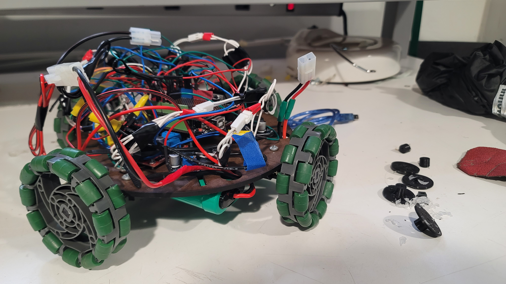
Software design
For the software implementation, we utilized a library named “L298N” which is dedicated to driving motors with L-298 H-bridges. One feature of this library was an object named “L298NX2”, which allowed for two motors to be controlled through one motor instance, rather than two separate instances. Since our robot had four motors, we used two L298NX2 instances to control our two H-bridges. Although, in order for our setup to work, one change we made to the library was its stop() function. It initially set in1 and in2 to both be low and the enable PWM value to 255, which would normally be fine for two paired motors. However, with our shared input setup, this would cause all 4 motors to start turning. As such, we updated the function to change the enable PWM signal to zero.
We encapsulated all of this logic into a C++ class to abstract this logic away.
Reflections on design
However, our design/how we went about the driving mechanism was far from perfect. There are several things we would change looking back on the process. To begin with, we definitely should have purchased bigger motors. While the small voltage had sufficient torque and voltage to power the motor, because it was so small, its shaft and gearbox could not endure the strain that our robot put on them due to its heavy weight (primarily due to the batteries). Additionally, we also should have designed our base to include the motors on the inner perimeter of our base. This design change would provide support on both sides of the motor which would help reduce strain on the shaft as well as prevent inward sagging of the wheels due to the weight of the robot. Below is a video of our robot before the added stress started causing wear.
tape sensing
Inspired by the ME 210 Sparki robot, we decided to use three IR sensors that pointed downward to enable the robot to sense the tape track. Our overall strategy was to move the robot forward if the middle sensor detected the tape, and to rotate the robot left or right if it detected that the left or right sensor was on the tape, respectively. The strategy was that the robots left and right sensors would be on either side of the track, and if either left or right sensor hovered over the track, the robot should rotate until both left and right sensors were off the tape. We measured the tape to be one inch wide, so we placed the IR sensors with 0.75 inch of spacing in between each sensor (i.e. a total of about 1.5 inches of space in between the left and right IR sensors). This spacing was chosen arbitrarily. Additional time would have allowed for more testing to empirically determine what an optimal spacing would be such that the robot didn’t calibrate directions to frequently or too infrequently.
Finally, if all three sensors hovered over the tape, this was the signal that the robot had encountered the end of track 1 (“T Junction”), which indicated that the robot should now transition to driving to contact zone.
Driving to Contact Zone
When driving to the contact zone, our initial approach was to use IR sensors to follow the line leading up to the contact zone and have the robot make contact. However, we ran into issues with this approach. Our robot would drive from the old line (the T-junction) to the new line and then turn to continue following the line — but it had trouble detecting the line again after the turn due to over correcting and the IR sensors being in a different orientation than assumed in software. Ultimately, we opted to have our robot drive to the new line and then strafe towards the contact zone and instead make the 90 degree turn once it neared the shooting zone so it could deposit the balls correctly. However, we are still able to use the line as a stopping point (since our line sensing code knows when it has reached a line such as the T-junction) such that the robot is directly aligned with the contact zone, and we can call a strafe directly to the contact zone.
Dart deposition
We always knew that the original idea was to use gravity as our shooting mechanism, with an electronic release that allowed the DARTs to fall into the shooting zone after the robot aligned itself in the corner.
The main change we made was replacing the linear actuator with a servo for various reasons; servos are cheaper and easy to find (as part of our ME210 lab kit), as well as lightweight, small and simple to use while maintaining the same function.
We decided to laser cut our shooting mechanism to save on manufacturing time as opposed to a large 3D print, leading us to the following prototype.
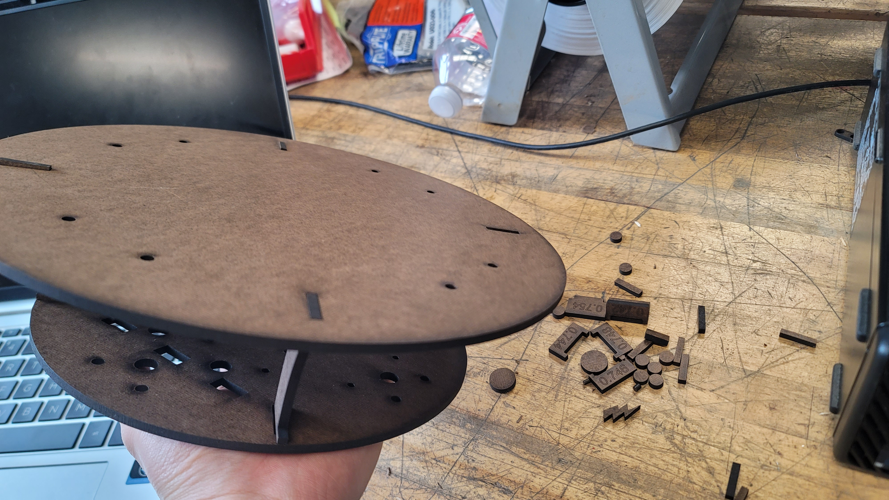
The advantage of this design is that the bottom is extremely flat; this meant it could very easily mount to the flat top surface that Dylan and Coco designed for the motor body.
However, there were two main issues with this design. Firstly, the balls would occasionally get jammed. This is because the two plastic walls were slightly too close together. In order to solve this problem, we added a brace horizontally spanning across the shooting mechanism that forced the walls very slightly apart, ensuring they would not get stuck. Then, the balls would occasionally get caught on the lip at the bottom of the shooting mechanism – this was solved by adding additional slope to the bottom and positioning the shooting mechanism further out relative to the edge of the robot. Secondly, the mounting of the servo caused some issues. As visible in the bottom left of the above photo, the slots in the side of the acrylic constrain the location of the servo. It was originally mounted to the shooting mechanism itself, but once we connected this shooting mechanism to the main body and knew its exact position, we were able to fix the servo to the main body which allowed for a much stronger connection.
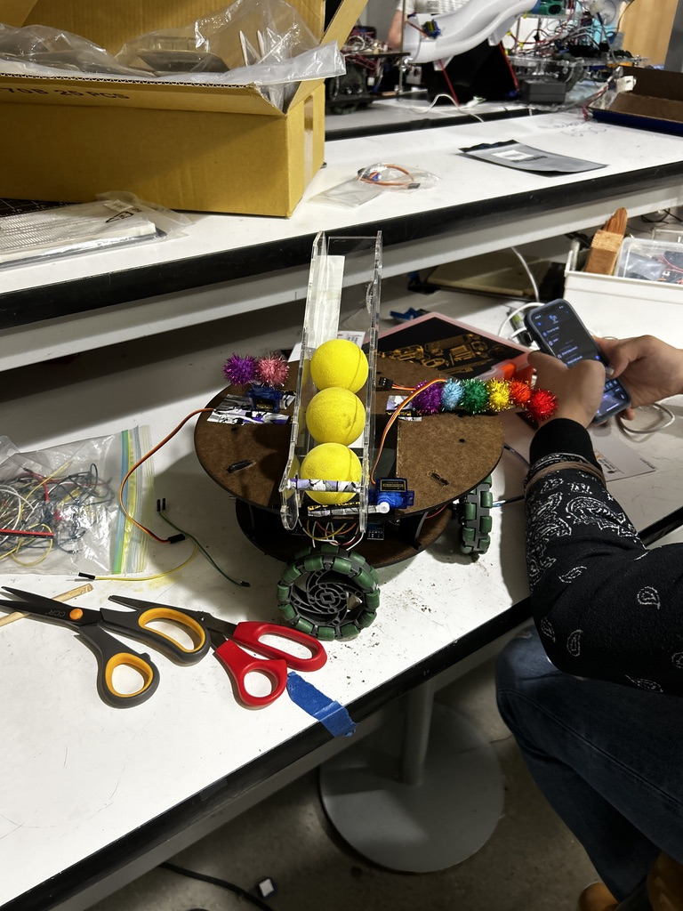
In terms of locating the robot at the shooting zone, we always had the plan to align the robot against the wall of the shooting zone; this allows us to eliminate turning and strafe against the wall such that the robot is automatically aligned at the edge of the shooting zone once it reaches the corner. Originally, we mounted an ultrasonic sensor to our robot; as part of our loop, we pinged the ultrasonic sensor and wanted to use it to maintain a constant wall distance; if the robot was further than 15 cm from the wall, we could adjust slightly forward to compensate; if the robot was closer than 8 cm to the wall, we could adjust slightly backward to compensate. However, it ended up being too difficult to implement with the time we were given, so we instead made contact with the walls in order to use them as reference planes for our robot.
Celebrating
Our group had many quite creative and ambitious ideas for how the robot would celebrate after finishing the required tasks, but we decided to focus on the other more complex features. Our celebration mechanism is simply a servo motor that rotates back and forth. Coco volunteered her pom poms to make the robot wave them as a celebration.
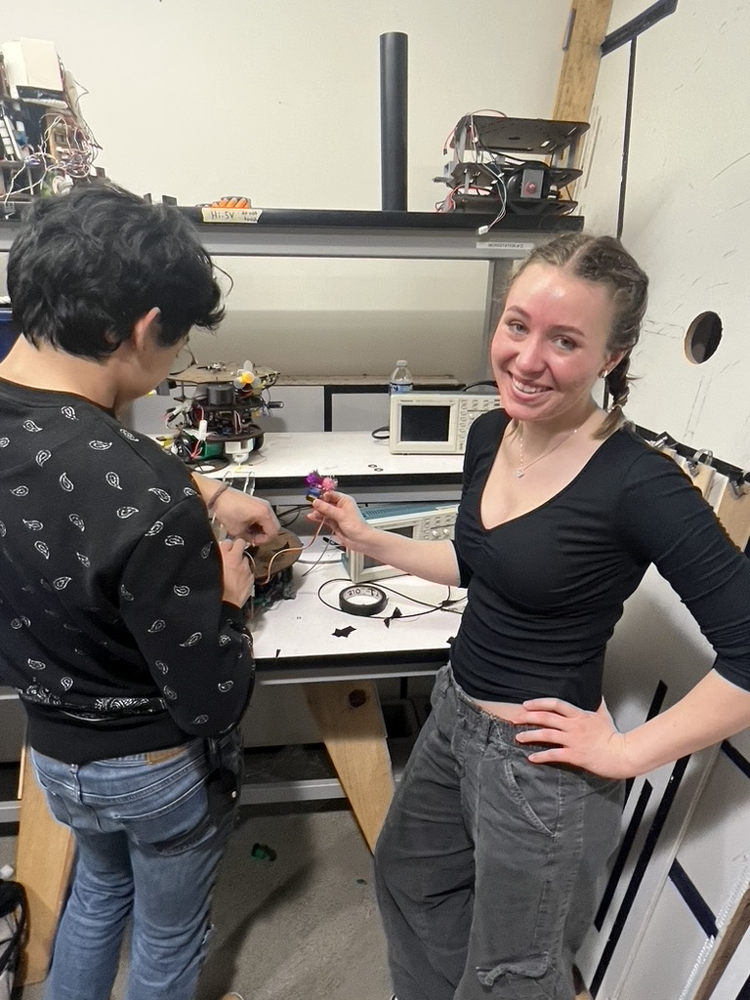